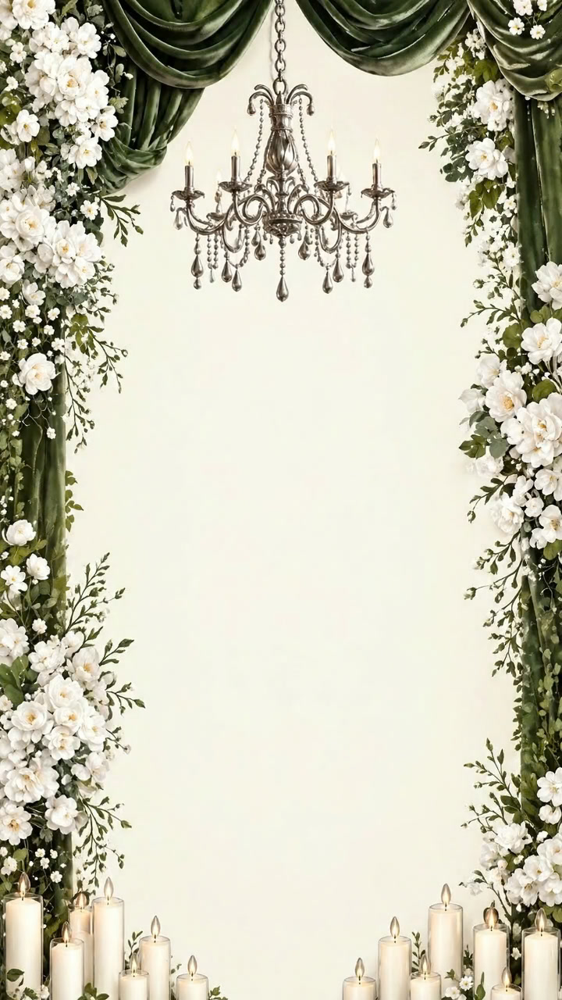

بِسْمِ اللهِ الرَّحْمٰنِ الرَّحِيْمِ
In the Name of Allah, the Most Gracious, the Most Merciful
We cordially invite you and your family to join us in celebrating the auspicious Mehndi ceremony of our beloved son
Sharjeel Mustafa Shahid
Son of: Shahid Hussain
Grandson of: Muhammad Saddique
Your presence and prayers are humbly requested to bless this sacred union.
Khan Forte Marriage Hall,
Tajpura, Lahore
House No. 9, Street No. 11,
Al Madina Colony,
Tajpura, Lahore
Khan Forte Marriage Hall,
Tajpura, Lahore
Allah Rakha
Muhammad Shahzad
Saad Ali
Contact & Queries
Wedding Invitation
Sharjeel Mustafa Shahid
Tajpura, Lahore